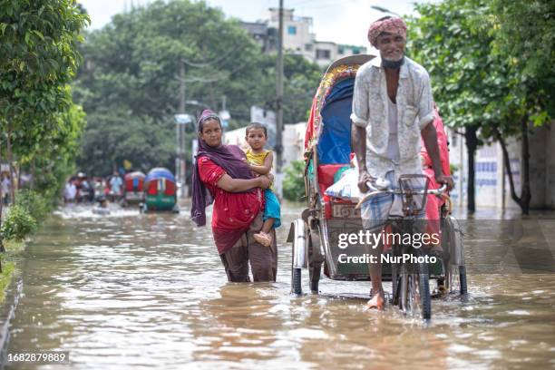
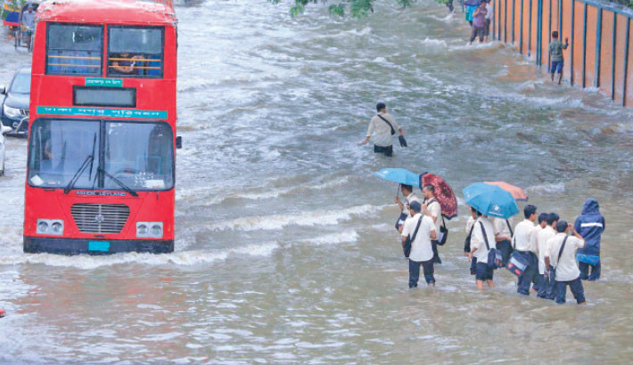

Reason of Flood
1. Excessive Rainfall
2. Poor Drainage Systems
3. High Water Table
4. River Overflow
5. Storm Surges
6. River Flooding
7. Natural Disasters
2. Poor Drainage Systems
3. High Water Table
4. River Overflow
5. Storm Surges
6. River Flooding
7. Natural Disasters

